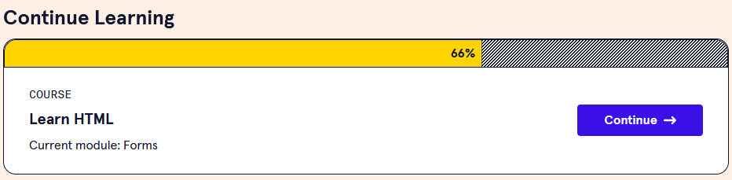
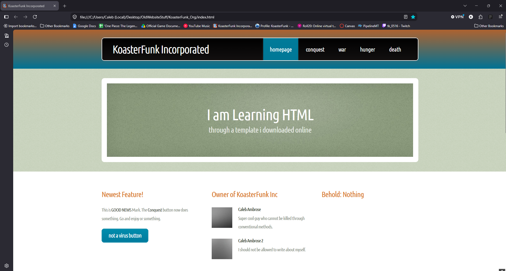
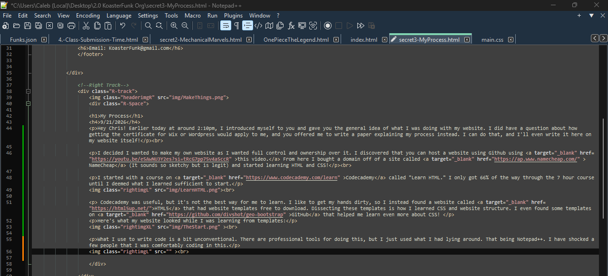

{kind=link}

My Process
9/21/2026
Hey Chris! Earlier today at around 2:10pm, I introduced myself to you and gave you the general idea of what I was doing with my website. I did have a question about how getting the certificate for Wix or Wordpress would apply to me, and you offered me to write a paper explaining my process instead. I can do that, and I'll even write it here on my website itself!
I decided I wanted to make my own website as I wanted full control and ownership over it. I discovered that you can host a website using Github using this video. From here I bought a domain off of a site called NameCheap (It sounds so sketchy but is legit) and started learning HTML and CSS!
I started with a course on Codecademy called "Learn HTML." I only got 66% of the way through the 7 hour course until I deemed what I learned sufficient to start.

Codecademy was useful, but it's not the best way for me to learn. I like to get my hands dirty, so I instead found a website called HTML5 that had website templates free to download. Dissecting these templates is how I learned CSS and website structure. I even found some templates on GitHub that helped me learn even more about CSS!
Here's what my website looked while I was learning from templates:

What I use to write code is a bit unconventional. There are professional tools for doing this, but I just used what I had lying around. That being Notepad++. I have shocked a few people that I was comfortably coding in this.

Now that I had an idea of how to make a website, I wanted to make a website that would be MINE. I took inspiration from the game HypnoSpace Outlaw. I love this game, and I took very direct inspiration from their offical website page The resemblance should be VERY CLEAR.
Now that I had a website theme that I was shooting for, I started coding. I use a free art program called Krita to make the assets for the page and even dither the images I post here to perserve the theme I desire. I didn't dither them for this page because I'm lazy (sorry).
And that's the jist of my process! Thanks for reading, and I hope you find this all intriguing!